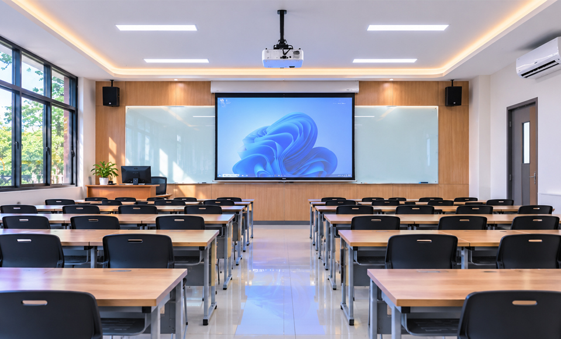
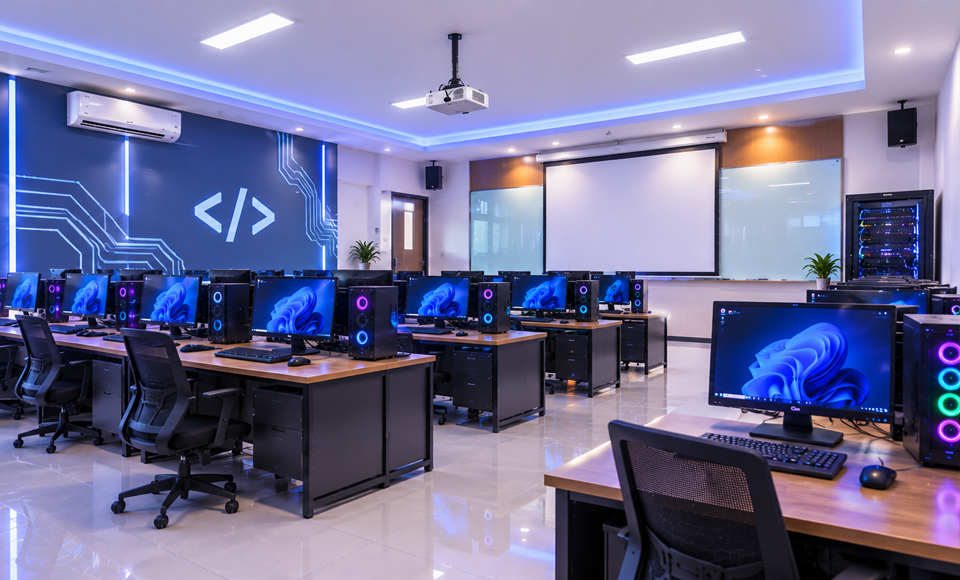
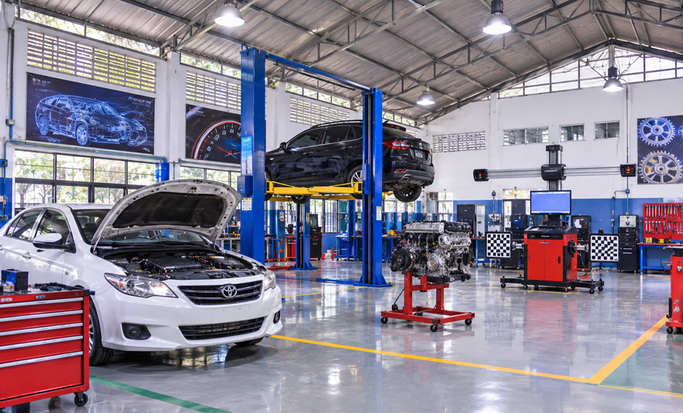
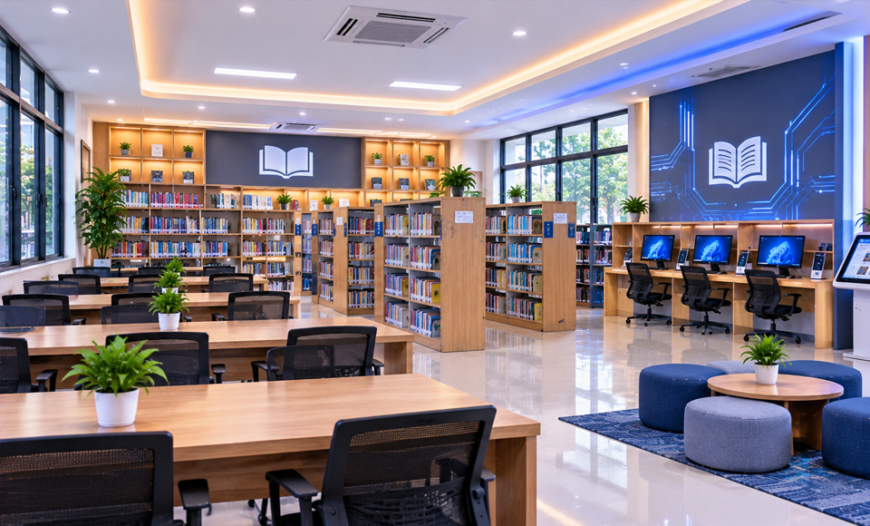
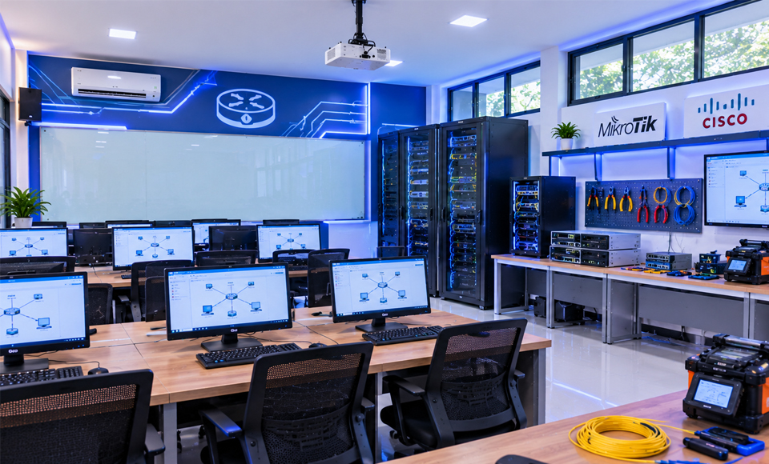
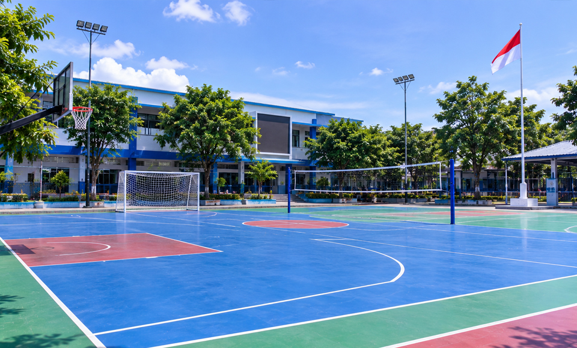
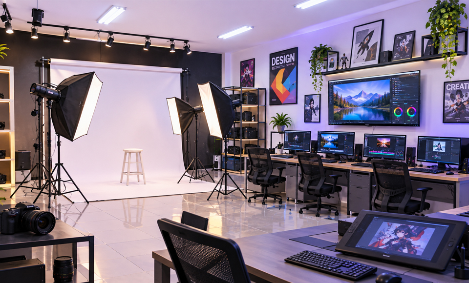
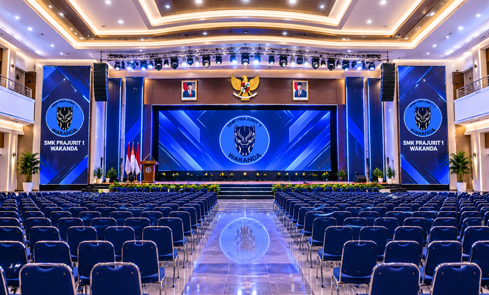

Ruang Belajar
Ruang Kelas Multimedia
36 ruang kelas representatif yang dilengkapi proyektor interaktif, papan tulis kaca, pencahayaan optimal, serta sirkulasi udara yang sejuk.
Setiap ruang belajar dan laboratorium dirawat secara berkala agar memenuhi standar keselamatan serta kenyamanan pendidikan vokasi.

36 ruang kelas representatif yang dilengkapi proyektor interaktif, papan tulis kaca, pencahayaan optimal, serta sirkulasi udara yang sejuk.

Tersedia 2 unit laboratorium dengan total 80 komputer spesifikasi tinggi dan koneksi internet fiber optik berkecepatan tinggi untuk praktik pemrograman.

Bengkel praktik luas dengan unit kendaraan praktik, mesin injeksi EFI, car lift hidrolik, alat spooring, dan scanner diagnostik modern.

Menyediakan lebih dari 8.500 judul buku pelajaran, referensi kejuruan, karya sastra, ruang baca ber-AC, serta terminal akses e-book sekolah.

Dilengkapi rak server, router MikroTik, switch Cisco, perangkat penyambung fiber optik (fusion splicer), dan simulator topologi jaringan.

Area olahraga terbuka untuk cabang bola basket, futsal, bola voli, bulu tangkis, serta pelaksanaan upacara bendera dan kegiatan kesiswaan.

Studio fotografi dengan pencahayaan profesional, kamera DSLR/Mirrorless, pen tablet grafis, dan komputer editing berlayar akurat warna.

Gedung pertemuan berkapasitas 500 orang yang digunakan untuk seminar industri, pameran karya siswa, rapat orang tua, dan wisuda kelulusan.